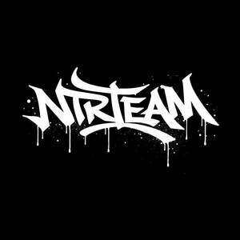

Trade Mark Journal No.2026/012 20 March 2026
UK00004349053 4 March 2026 (35,41)

- Class 35
- Administrative processing of purchase orders; administrative services for the relocation of businesses; administration of customer loyalty programs; administration of frequent flyer programs for airline customers; cost price analysis; business auditing; outsourced administrative management for companies; negotiation of business contracts for others; negotiation and conclusion of commercial transactions for third parties; market research; market intelligence services; public opinion polling; arranging and conducting commercial events; arranging and conducting promotional events; demonstration of goods; business information services; providing business information via websites; providing business information; providing commercial and business contact information; providing commercial information and advice for consumers in the choice of goods and services; compilation of information into computer databases; compilation of statistics; systemization of information into computer databases; updating and maintenance of data in computer databases; data processing services (office functions); computerized file management; data search in computer files for others; website indexing for commercial or advertising purposes; business research; business investigations; business management assistance; commercial or industrial management assistance; business management consultancy; business organization consultancy; personnel management consultancy; advisory services for business management; business efficiency expert services; interim business management; business project management services for construction projects; procurement services for others (purchasing goods and services for other businesses); personnel recruitment; business management of performing artists; business management of freelance workers; administration of reimbursement programs for others; marketing; influencer marketing; targeted marketing; marketing research; digital marketing services; marketing in the framework of software publishing; marketing through product placement in virtual reality environments for others; development of marketing concepts; development of advertising concepts; development of market research studies; consultancy regarding advertising communication strategies; consultancy regarding public relations communication strategies; corporate communications services; public relations services; advertising agency services; advertising services for the creation of corporate identity for others; advertising; pay-per-click advertising; online advertising on a computer network; outdoor advertising; advertising by mail order; direct mail advertising; dissemination of advertising material; updating of advertising material; publication of publicity texts; writing of publicity texts; writing of advertising scripts; production of advertising films; layout services for advertising purposes; advertising campaign management services; search engine optimization for sales promotion; website traffic optimization; provision of sales leads for others; lead generation services; compilation of target audience profiles for commercial or marketing purposes; sales promotion for others; promotion of goods through influencers; promotion of goods and services through sponsorship of sports events; sponsorship search; business intermediary services relating to the matching of potential private investors with entrepreneurs needing funding; business intermediary services relating to the matching of professionals with clients; commercial intermediation services; business networking services; provision of online marketplaces for buyers and sellers of goods and services; provision of online marketplaces for sellers and buyers of downloadable digital image files authenticated by non-fungible tokens [NFTs]; presentation of goods on communication media for retail purposes; retail services in relation to downloadable digital music provided online; retail services in relation to downloadable ringtones provided online; retail services in relation to downloadable and pre-recorded music and films provided online; organization of exhibitions for commercial or advertising purposes; organization of fashion shows for promotional purposes; organization of trade fairs; rental of advertising space; rental of advertising materials; rental of advertising time on communication media; rental of billboards (advertising boards); rental of sales stands; rental of cash registers; rental of vending machines; economic forecasting; text processing; business consulting relating to digital transformation; brand positioning services; brand strategy services; development of business organization strategies relating to corporate social responsibility; professional business consultancy.
- Class 41
- Academies (education); teaching; arranging and conducting congresses; arranging and conducting colloquiums; arranging and conducting conferences; arranging and conducting concerts; arranging and conducting educational forums with in-person attendance; arranging and conducting workshops (training); arranging and conducting entertainment events; arranging and conducting seminars; arranging and conducting symposiums; arranging and conducting sporting events; arranging beauty contests; arranging and conducting business conferences; providing user reviews for entertainment or cultural purposes; providing information in the field of entertainment; providing information relating to leisure activities; providing online non-downloadable video recordings; providing online non-downloadable electronic publications; providing online non-downloadable images; providing online non-downloadable music; providing user ratings for entertainment or cultural purposes; ticket reservation services for shows; movie showings; movie rental; cultural, educational or entertainment services provided by art galleries; songwriting; scriptwriting, other than for advertising purposes; writing of texts; organization of balls; organization of shows (impresario services); organization of exhibitions for cultural or educational purposes; organization of e-sports competitions; organization of competitions (education or entertainment); organization of fashion shows for entertainment purposes; organization of costume entertainment events; organization of sports competitions; music education; transfer of business knowledge and know-how (training); transfer of know-how (training); party planning (entertainment); entertainment services provided by performing artists; disc jockey services; discotheque services; drone videography services; nightclub services (entertainment); orchestra services; entertainment services provided in virtual reality environments; lighting technician services for events; sports camp services; recording studio services; holiday camp services (entertainment); theatre ticket agency services; photography services; services of photojournalists; gambling services; music composition services; practical training (demonstration); presentation of live performances; presentation of variety shows; presentation of museum exhibitions; presentation of light shows using drones; presentation of circus performances; rental of audio equipment; rental of show scenery; rental of lighting apparatus for theatrical sets or television studios; rental of humanoid robots with communication and learning functions for entertaining people; rental of theatrical scenery; rental of stadium facilities; rental of downloadable digital image files authenticated by non-fungible tokens (NFTs); online publication of electronic books and journals; publication of books; publication of texts, other than publicity texts; directing of shows; entertainment services; production of shows; music production; podcast production; theatrical productions; photography.
Oksana Biriukovych